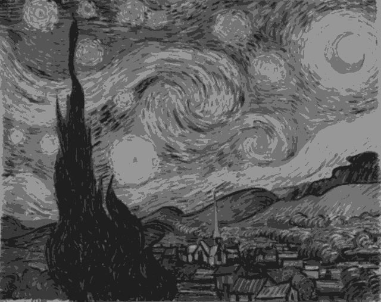
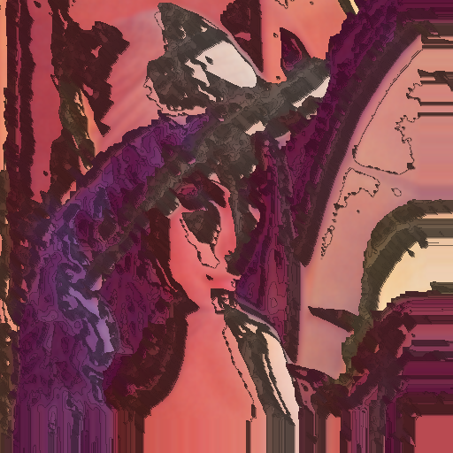
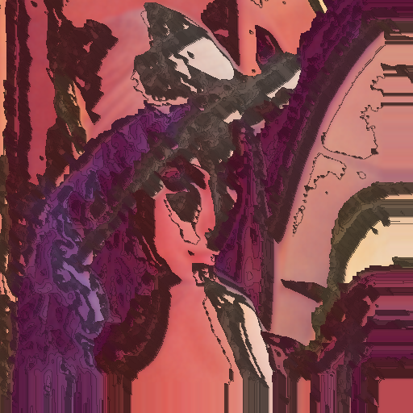

I wanted to start looking at how to use my image processing library and this was a good introduction or 'hello world' into image processing with lisp.
| 1 | -2 | 1 |
| -2 | 4 | -2 |
| 1 | -2 | 1 |
The next step of the process is to detect the brush strokes from an image. The process that I used for this includes multiple image manipulation processes, but the main act of the show is edge detection.
The library that I use to perform the more complicated aspects of this
project contains a
k-means function, but it dosen't perform how I want it to.
For this, I modified it so that it would output an image based on what the K
values was. For feature extraction of the brush strokes, k-means does all of
the heavy lifting out of getting nice clusters of pixels.

The edge detection is overlayed on top of a slightly processed reference
image. While this does not extract all the strokes that I want it to, and
there are large clusters which impact the outcome of the data, this is good
for now.
I don't have too much to say about this, but here is an origional image side by side against the same image with an image filter trained on "The Scream":
 
